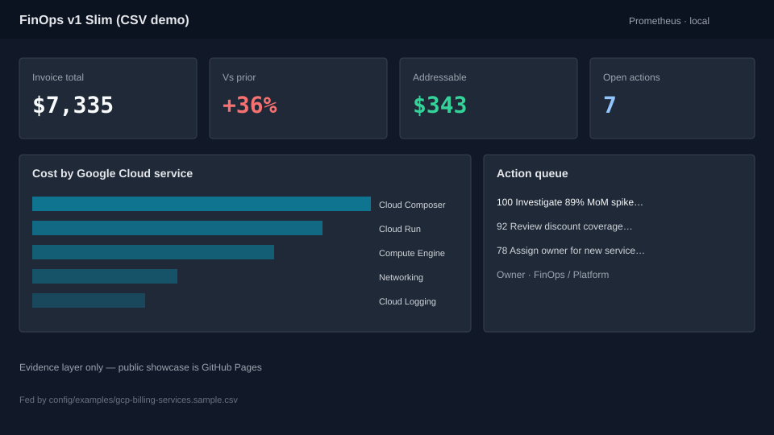

Spend
What did we spend?
Loading snapshot…
Drivers
Where does the money go?
Trend
How does this period compare?
Top risers
Top fallers
Opportunities
Where can we recover spend?
Action queue
Who does what next?
Alerts
What needs attention now?
How it’s built
Same CSV, ops stack.
This Pages showcase is the product front door. The same billing CSV feeds a local Prometheus + Grafana evidence stack for client handoff and screenshots.
